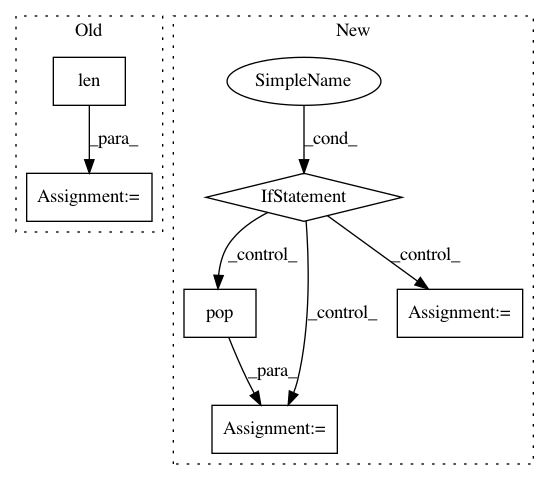

4b21300999e11ba6f91952c05a936ccec0673e2e,nltk/tokenize/treebank.py,TreebankWordTokenizer,span_tokenize,#TreebankWordTokenizer#Any#,147
Before Change
else:
real_token = word_token
ix = text.find(real_token, ix)
end = ix + len(real_token)
spans.append((ix, end))
ix = end
return spans
After Change
// Do this only if original text contains double quote(s) or double
// single-quotes (because "" might be transformed to `` if it is
// treated as starting quotes).
if (""" in text) or ("""" in text):
// Find double quotes and converted quotes
matched = [m.group() for m in re.finditer(r"``|"{2}|\"", text)]
// Replace converted quotes back to double quotes
tokens = [matched.pop(0) if tok in [""", "``", """"] else tok for tok in raw_tokens]
else:
tokens = raw_tokens
return align_tokens(tokens, text)
class TreebankWordDetokenizer(TokenizerI):
In pattern: SUPERPATTERN
Frequency: 3
Non-data size: 6
Instances
Project Name: nltk/nltk
Commit Name: 4b21300999e11ba6f91952c05a936ccec0673e2e
Time: 2017-11-29
Author: lyyb46@gmail.com
File Name: nltk/tokenize/treebank.py
Class Name: TreebankWordTokenizer
Method Name: span_tokenize
Project Name: analysiscenter/batchflow
Commit Name: cba76d5cf38125d9dc221dbe0681a7710d5d06d3
Time: 2020-12-01
Author: rhudor@gmail.com
File Name: batchflow/batch.py
Class Name: Batch
Method Name: apply_parallel
Project Name: stellargraph/stellargraph
Commit Name: 6e7be4c247f55585f25fd0d8406d86e096b645e6
Time: 2018-09-05
Author: docherty@gmail.com
File Name: stellargraph/mapper/link_mappers.py
Class Name: NodeSequence
Method Name: __init__